01可考虑Consider

正面自然站Neutral standing
身体正立，双手在衣身两侧，先看清正面结构。Upright torso and hands beside the garment keep the front readable.
裁光 · 服饰 AI 影棚CAIGUANG · AI FASHION STUDIO
从这件衣服出发，
把每一个动作，变成有目的的展示。Start with the garment.
Give every pose a reason to be in the frame.
36 个视觉入口 · 52 动作 / 60 视图
先确认拍摄方案，再按需生成36 visual entries · 52 actions / 60 views
Review the shot plan before generating
在 Codex 中使用的服饰 AI 创作插件A fashion image creation plugin for Codex
01 / 把拍法想清楚01 / PLAN THE SHOT
领口要看清，手就别挡住。
同一件衣服，展示重点决定动作。A neckline needs room to be seen.
Change the focus, change the pose.
开启对照，看见“同动作”和“疑似近似”怎样改变考虑顺序。实际使用时，只比较你指定的历史任务；被拒收的返回记录也保留。需要复用时，说明这次的用途。Turn comparison on to see exact and possible near repeats change the example order. In actual use, only task records you select are compared; rejected returns remain in history. Explain the purpose when reusing a pose.
这里的候选、顺序和历史是预设教学示例，不读取你的任务，不分析这张商品图。实际近似比较仅覆盖有限英文动作文字，不是看图识别；未命中不等于确认新姿势。Candidates, order and history here are preset teaching examples. This page reads no private tasks and does not analyze the photo. Actual near-repeat checks cover limited English action text, not image recognition; no match does not prove novelty.
02 / 看见更多可能02 / EXPLORE THE LIBRARY
从自然站立，到坐地、跪姿与侧卧。
看见动作，也看清使用条件。Standing, floor seated, kneeling and side lying.
See each pose and the conditions that come with it.
避免多个无区别站姿；不用于必须明显动态的画面。Avoid redundant static shots; use another pose when clear motion is needed.
查看原图 ↗View original ↗正面左右对称结构照优先正立。Prefer a square stance for symmetrical front construction checks. Requires front-side references of the same garment; a pose drawing cannot supply missing product views.
查看原图 ↗View original ↗需要左右对称或没有前侧商品依据时不用。Requires front-side garment evidence; avoid when symmetry is essential.
查看原图 ↗View original ↗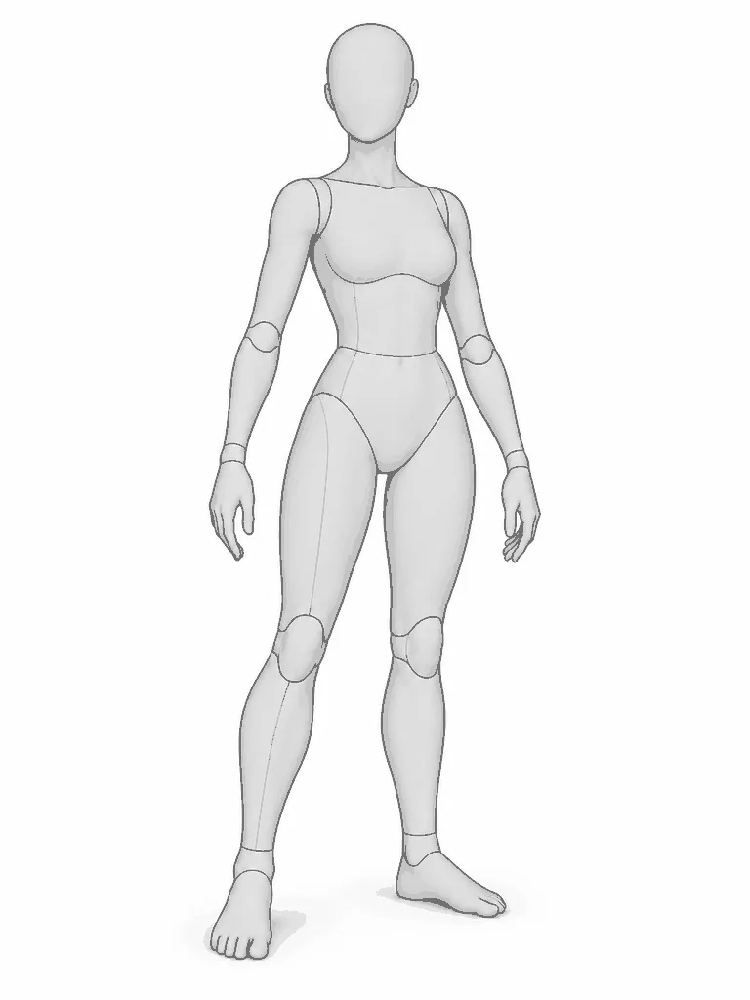
正视Front正视图仍包含躯干转向，需前侧商品依据。Requires front-side garment evidence; avoid when symmetry is essential.
查看原图 ↗View original ↗活动量未知或限制步幅时不用。Requires known movement allowance. The back view also requires the same garment’s back reference.
查看原图 ↗View original ↗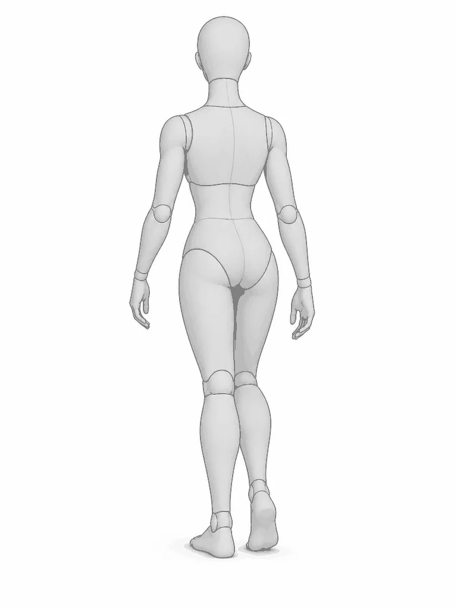
背视Back需同款背图；活动量未知或限制步幅时不用。Requires known movement allowance. The back view also requires the same garment’s back reference.
查看原图 ↗View original ↗窄裙、短裙、活动量未知裙装或限制步幅时不用。Avoid narrow or short skirts and garments with unknown or limited stride allowance.
查看原图 ↗View original ↗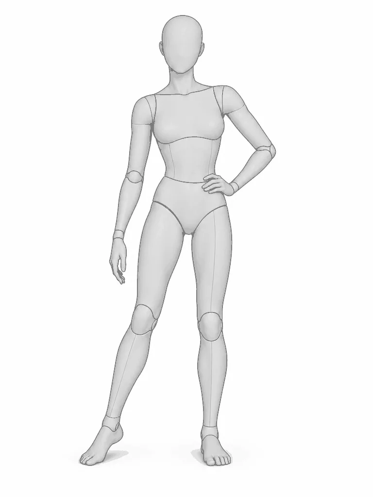
正视Front腰侧口袋或饰带需无遮挡时不用；不压出不存在的收腰。Avoid when a side pocket or belt must remain clear. Do not invent a cinched waist.
查看原图 ↗View original ↗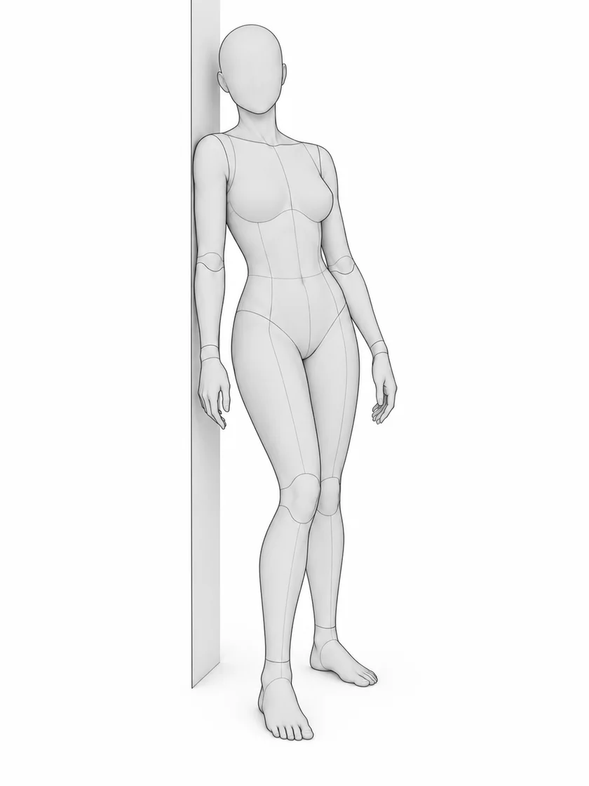
斜视Three-quarter支撑不得切进衣服轮廓；没有可用墙面或前侧商品依据时不用。Needs a credible wall and front-side garment evidence; keep the support outside the garment outline. Requires front-side references of the same garment; a pose drawing cannot supply missing product views.
查看原图 ↗View original ↗短裙、超短下摆、硬裙撑、活动量不明或必须完整背长时不用。Avoid short hems, stiff skirts, unknown movement allowance, or shots requiring the full back length.
查看原图 ↗View original ↗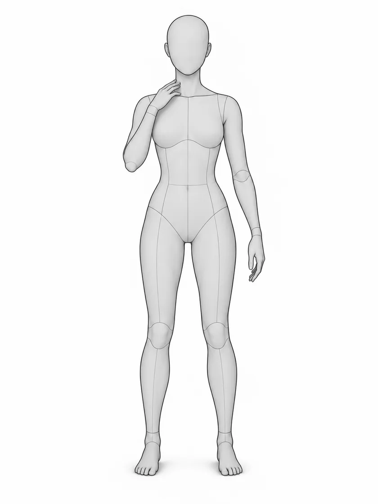
正视Front无领商品或领口必须完全无遮挡时不用；不拉扯领型。Avoid collarless garments or a fully unobstructed neckline goal. Do not pull or reshape the collar.
查看原图 ↗View original ↗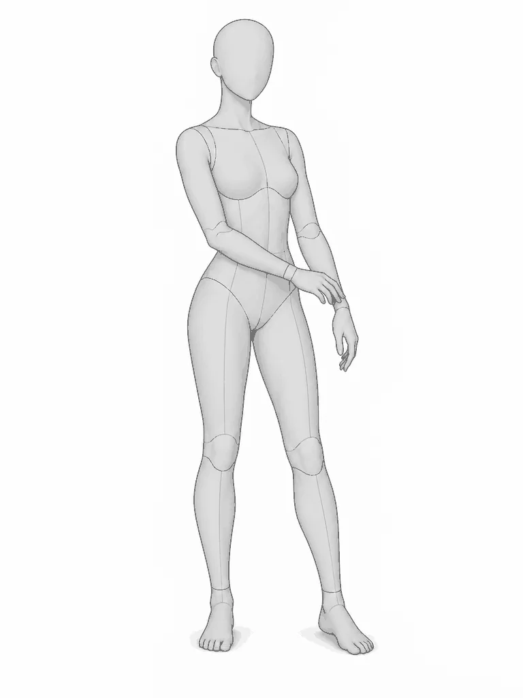
斜视Three-quarter无袖短袖或袖口需完全无遮挡时不用；不改变袖长结构。Avoid sleeveless or short sleeves and unobstructed cuff goals. Do not alter sleeve length or construction. Requires front-side references of the same garment; a pose drawing cannot supply missing product views.
查看原图 ↗View original ↗袖部活动不足或耳侧大配饰冲突时不用。Requires sleeve mobility and space around ear accessories. Requires front-side references of the same garment; a pose drawing cannot supply missing product views.
查看原图 ↗View original ↗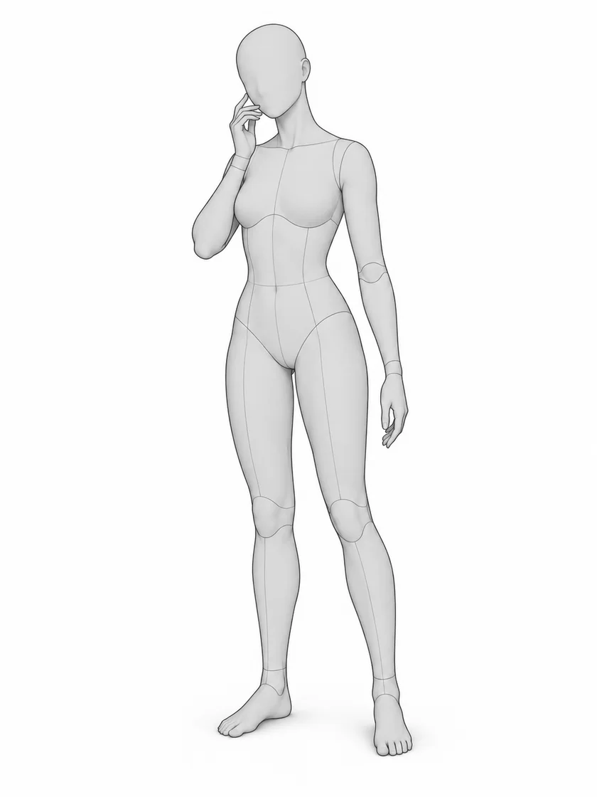
斜视Three-quarter不露脸裁切或手遮住领口重点时不用。Avoid faceless crops or a hand blocking the neckline. Requires front-side references of the same garment; a pose drawing cannot supply missing product views.
查看原图 ↗View original ↗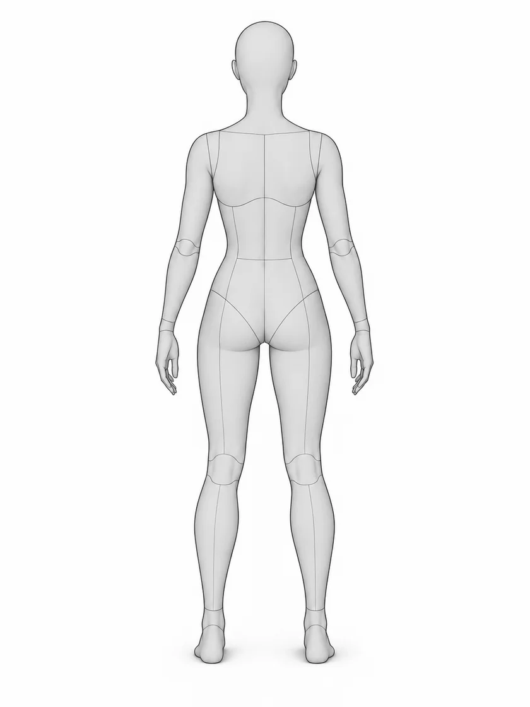
背视Back无同款背图时不用；露脸另核人物角度。Requires the same garment’s back reference. Visible face angles need separate identity evidence.
查看原图 ↗View original ↗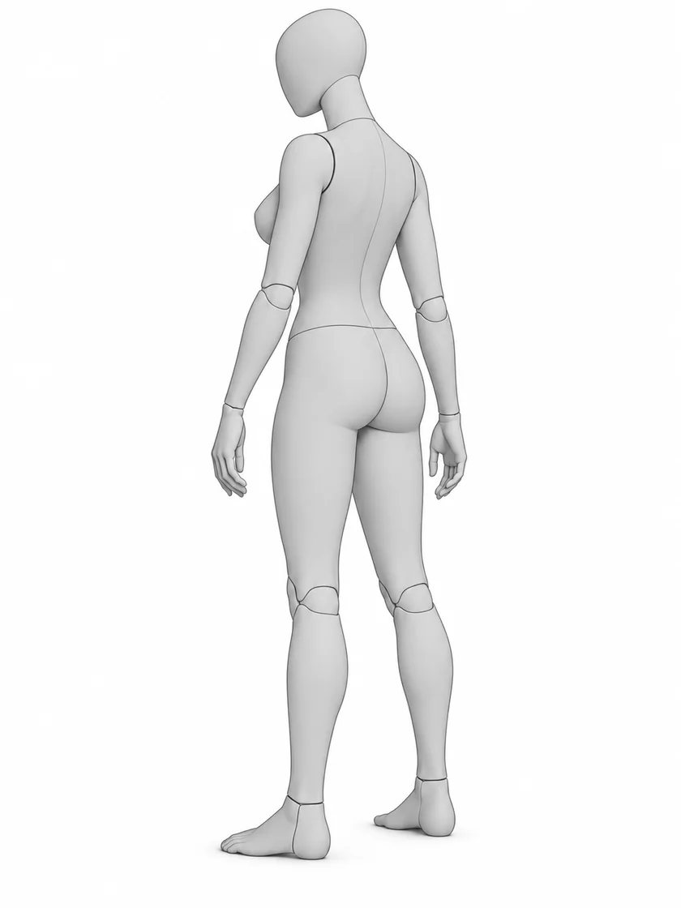
背视Back需同款背面与前侧依据；真人新脸角度不得由此图推导。Requires back and front-side garment references. This pose cannot establish a new real-person face angle.
查看原图 ↗View original ↗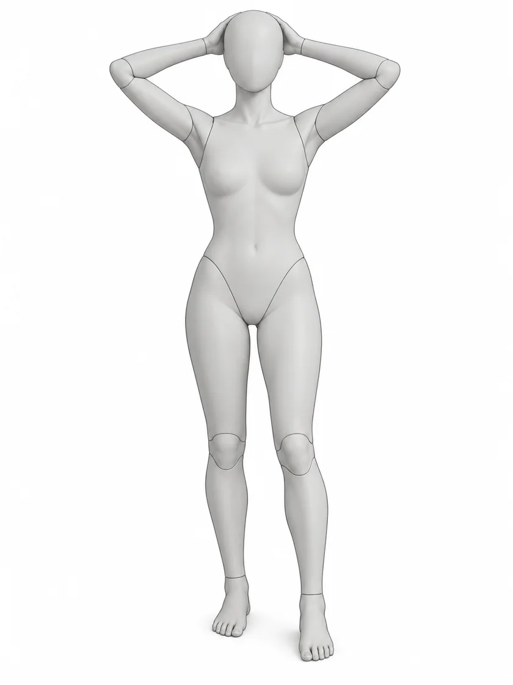
正视Front紧窄袖、固定肩带、易走光或必须保持衣长平直的商品Avoid tight sleeves, fixed straps, exposure risk, or a need to keep garment length unstrained.
查看原图 ↗View original ↗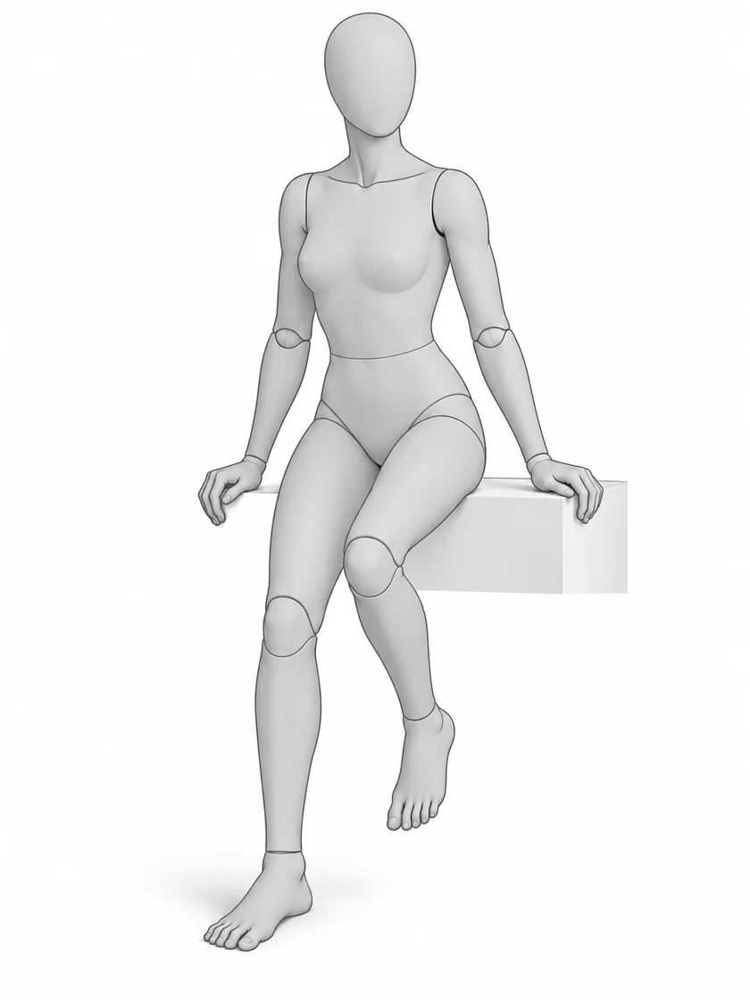
斜视Three-quarter台高不合理、脚悬空、短裙、衣摆主结构被坐压；需同款前侧商品依据，线稿不能补足商品视角Requires believable seat height and grounded feet. Avoid short skirts or compressed key hems. Requires front-side references of the same garment; a pose drawing cannot supply missing product views.
查看原图 ↗View original ↗短裙、膝踝扭转不自然、硬挺礼服结构易塌；需同款前侧商品依据，线稿不能补足商品视角Avoid short skirts, twisted joints, or stiff gowns that would collapse. Front-side garment evidence is required, including for this front view.
查看原图 ↗View original ↗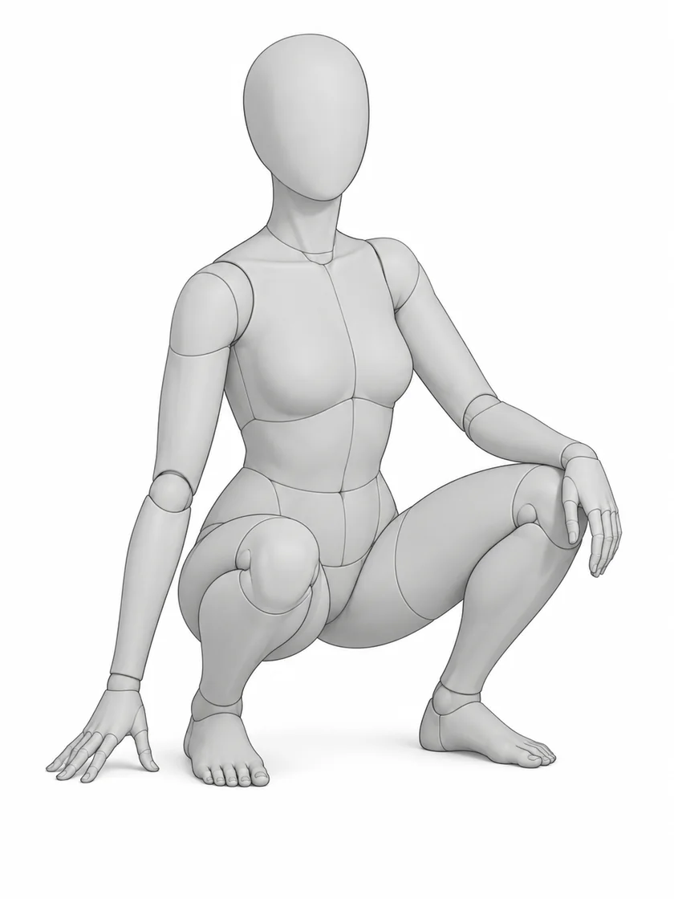
斜视Three-quarter仅沿用试点判断；裙装、紧裤、活动余量未知或需要展示完整裤长时不用；需同款前侧商品依据Retains pilot review only. Avoid skirts, tight trousers, unknown mobility or full trouser-length goals. Requires front-side references of the same garment; a pose drawing cannot supply missing product views.
查看原图 ↗View original ↗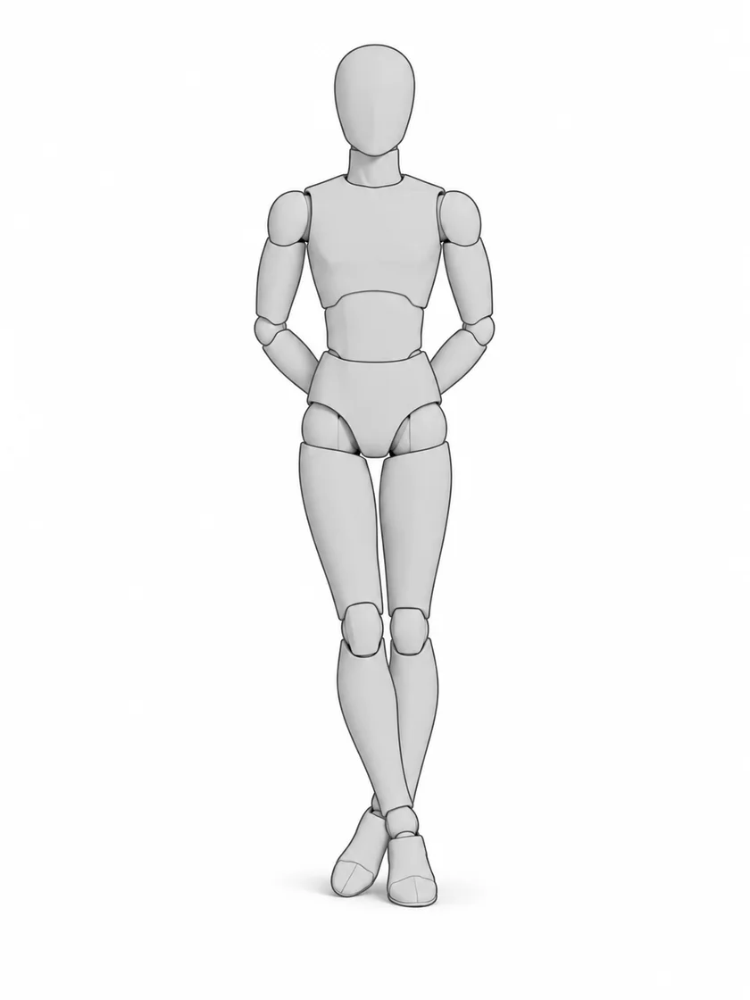
正视Front裤腿完整轮廓或背部结构是重点；脚部不稳Avoid when full trouser shape or the garment back is the focus; maintain a stable stance.
查看原图 ↗View original ↗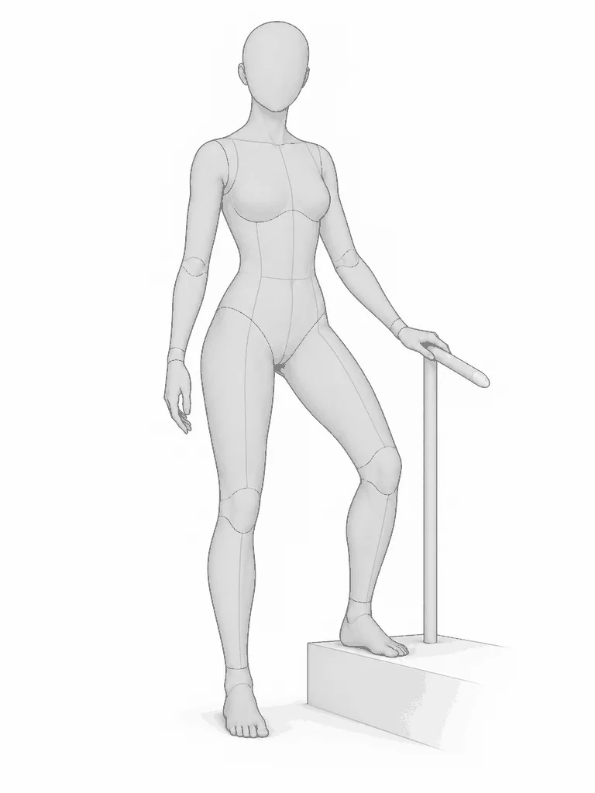
斜视Three-quarter窄裙、长拖尾、足部支撑不可见或不可信；需同款前侧商品依据，线稿不能补足商品视角Avoid narrow skirts, trains or invisible or implausible foot support. Requires front-side references of the same garment; a pose drawing cannot supply missing product views.
查看原图 ↗View original ↗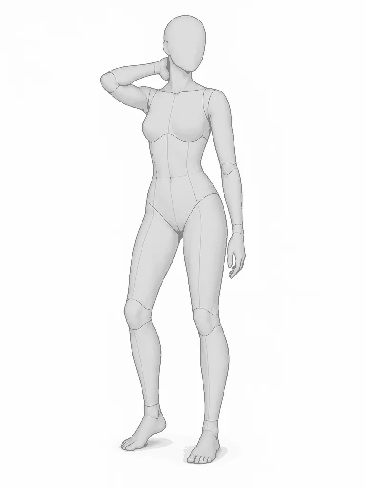
斜视Three-quarter高领／帽领为必须完整展示部位；抬臂严重拉扯；需同款前侧商品依据，线稿不能补足商品视角Avoid high-collar or hood detail goals and sleeve strain. Requires front-side references of the same garment; a pose drawing cannot supply missing product views.
查看原图 ↗View original ↗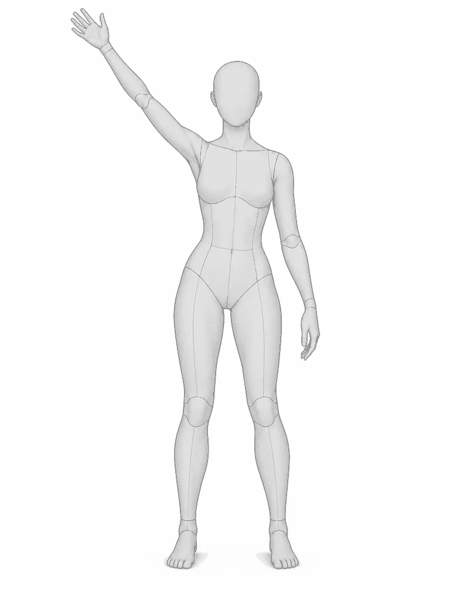
正视Front紧身长裙、短上衣需保持原露肤、结构验证主图Avoid tight long dresses, exposure changes in cropped tops, or construction-verification hero shots.
查看原图 ↗View original ↗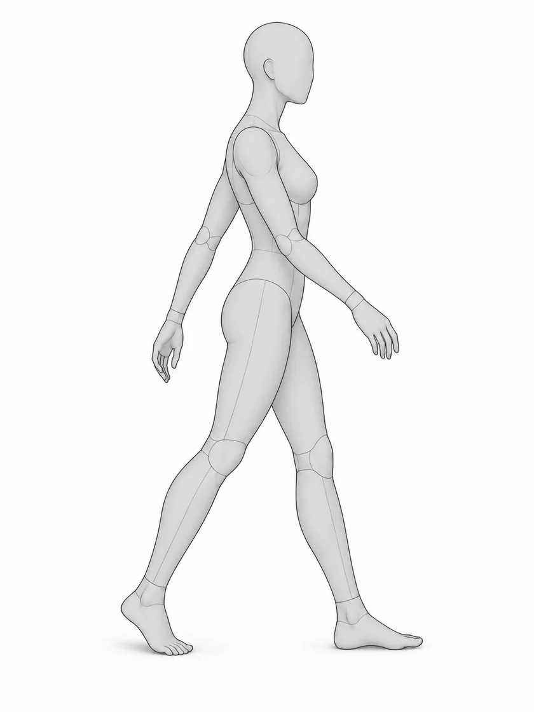
侧视Side必须正面看清全部门襟；侧向商品依据不足；需同款前侧商品依据，线稿不能补足商品视角Avoid when the complete front placket must be visible or side-view garment evidence is missing.
查看原图 ↗View original ↗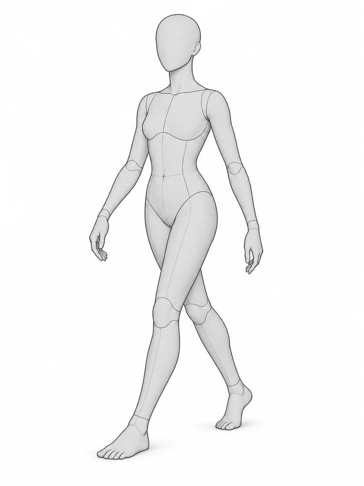
斜视Three-quarter窄裙、拖尾或活动余量未知；不用于证明静态衣长；需同款前侧商品依据，线稿不能补足商品视角Avoid narrow skirts, trains or unknown mobility. Does not prove the garment’s resting length. Requires front-side references of the same garment; a pose drawing cannot supply missing product views.
查看原图 ↗View original ↗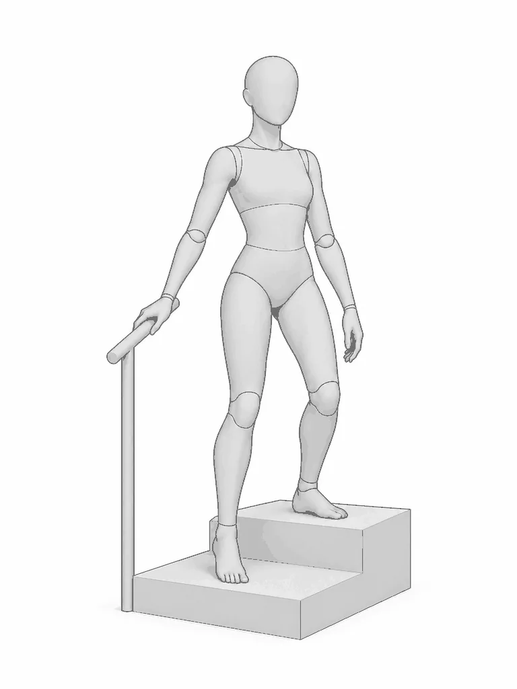
斜视Three-quarter拖地长裙、鞋底支撑不清楚、栏杆挡住主商品；需同款前侧商品依据，线稿不能补足商品视角Avoid floor-length gowns, unclear sole support or a rail blocking the garment. Requires front-side references of the same garment; a pose drawing cannot supply missing product views.
查看原图 ↗View original ↗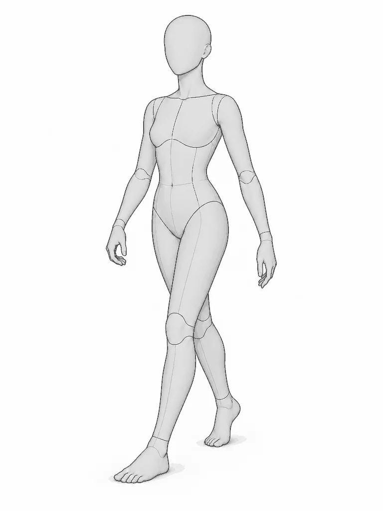
斜视Three-quarter本件鞋包或侧部细节会被遮挡；不凭线稿给商品加配件；需同款前侧商品依据，线稿不能补足商品视角Avoid blocking footwear, bags or side details. Do not add product accessories from this drawing. Requires front-side references of the same garment; a pose drawing cannot supply missing product views.
查看原图 ↗View original ↗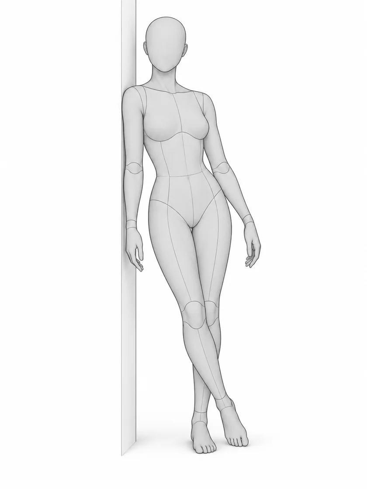
斜视Three-quarter裤腿宽度展示、窄裙不允许交踝、支撑不可信；需同款前侧商品依据，线稿不能补足商品视角Avoid trouser-width goals, narrow skirts that prevent crossing, or implausible support. Requires front-side references of the same garment; a pose drawing cannot supply missing product views.
查看原图 ↗View original ↗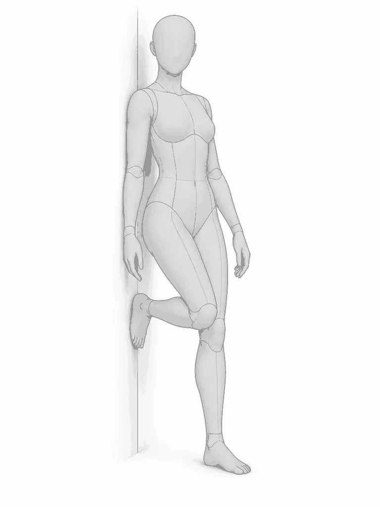
斜视Three-quarter窄裙、鞋底不可见、后片必须展示、衣物易被墙压坏；需同款前侧商品依据，线稿不能补足商品视角Avoid narrow skirts, hidden soles, back-panel goals or a garment compressed against the wall. Requires front-side references of the same garment; a pose drawing cannot supply missing product views.
查看原图 ↗View original ↗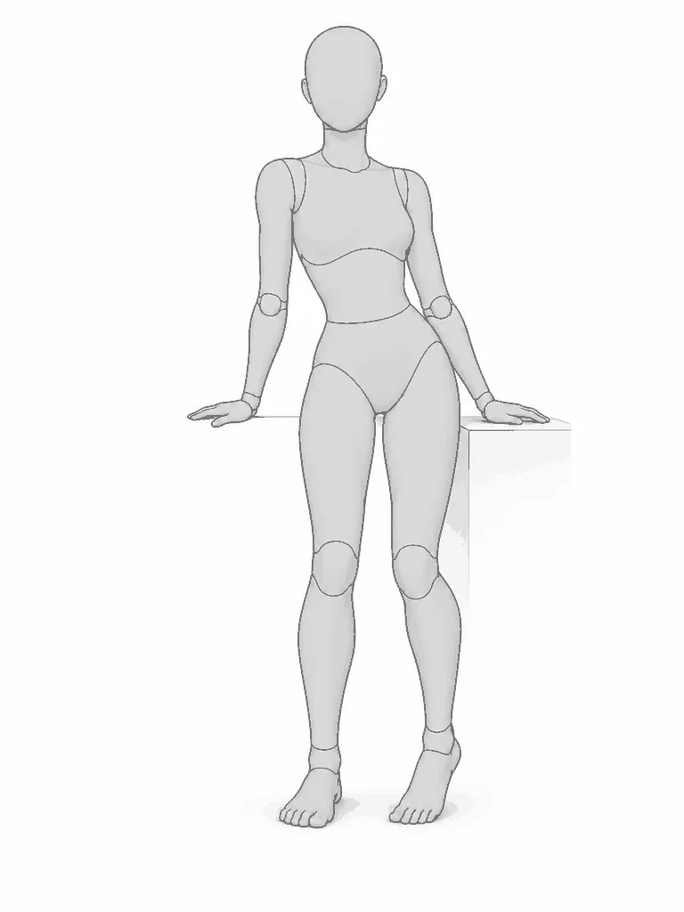
斜视Three-quarter后摆／侧缝为重点；台面遮住腰部；短裙或不稳支撑；需同款前侧商品依据，线稿不能补足商品视角Avoid side-seam or back-hem goals, a hidden waist, short skirts or unstable support. Requires front-side references of the same garment; a pose drawing cannot supply missing product views.
查看原图 ↗View original ↗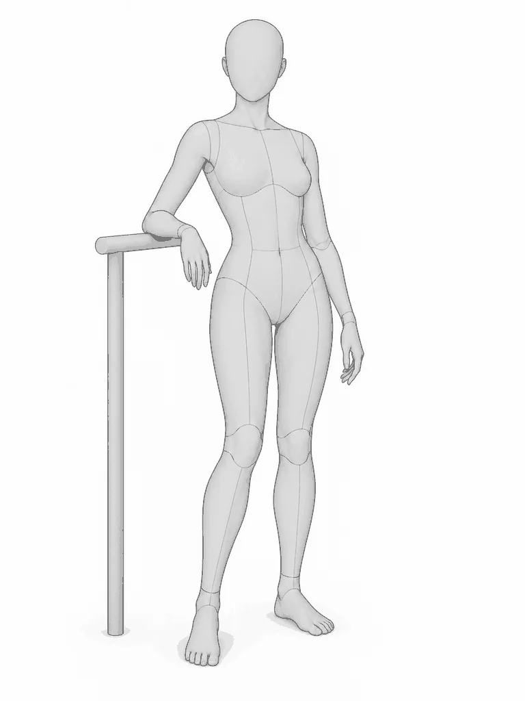
斜视Three-quarter栏高遮胸腰；袖部关键细节被承重压住；需同款前侧商品依据，线稿不能补足商品视角Avoid a rail blocking chest or waist, or pressure on important sleeve details. Requires front-side references of the same garment; a pose drawing cannot supply missing product views.
查看原图 ↗View original ↗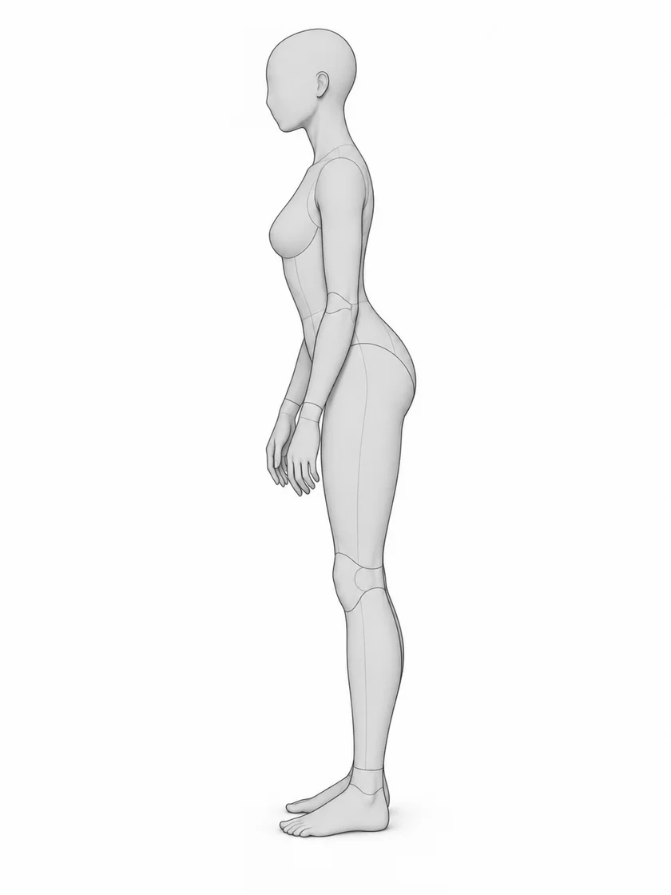
侧视Side低领易走光、硬挺前片必须完整平展；不得改成深鞠躬；需同款前侧商品依据，线稿不能补足商品视角Avoid low-neckline exposure and rigid front panels that must remain flat. No deep bow. Requires front-side references of the same garment; a pose drawing cannot supply missing product views.
查看原图 ↗View original ↗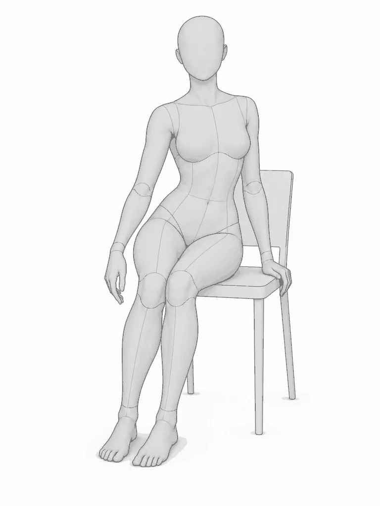
斜视Three-quarter膝上装饰是重点、紧窄裙被拉短、裤腿需分开展示；需同款前侧商品依据，线稿不能补足商品视角Avoid knee details, tight skirts pulled short, or shots needing separately visible trouser legs. Requires front-side references of the same garment; a pose drawing cannot supply missing product views.
查看原图 ↗View original ↗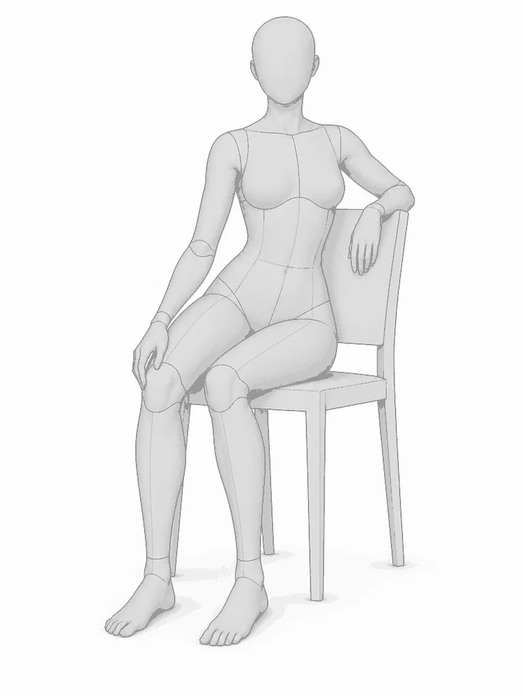
斜视Three-quarter硬挺短裙、强行跨坐椅背、肩关节转动过大；需同款前侧商品依据，线稿不能补足商品视角Avoid stiff short skirts, straddling a chair back or excessive shoulder rotation. Requires front-side references of the same garment; a pose drawing cannot supply missing product views.
查看原图 ↗View original ↗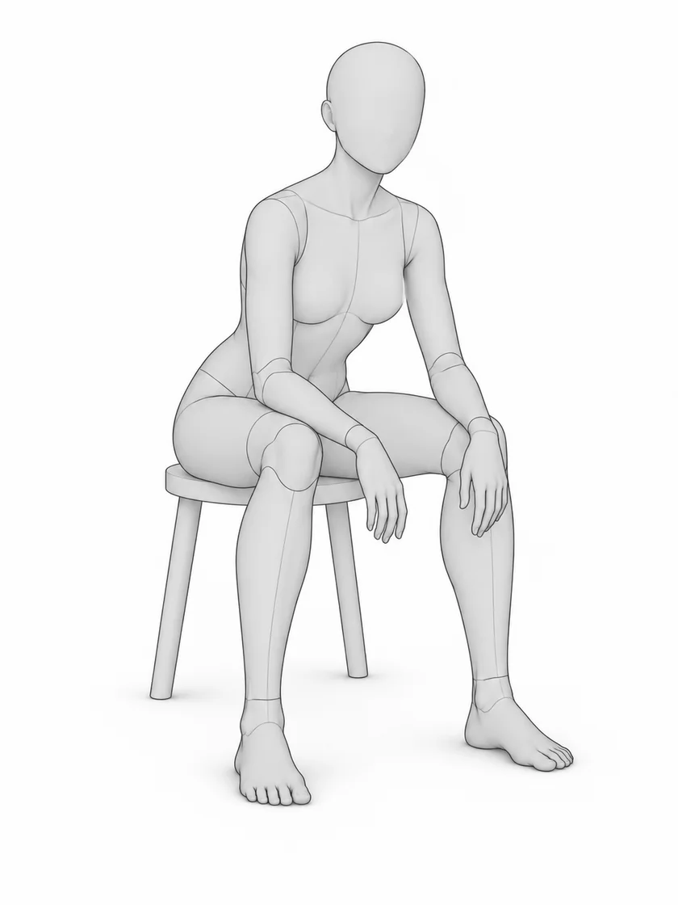
斜视Three-quarter关键胸袋／门襟需无折叠、短裙、低领；需同款前侧商品依据，线稿不能补足商品视角Avoid short skirts, low necklines and chest-pocket or placket goals requiring a flat front. Requires front-side references of the same garment; a pose drawing cannot supply missing product views.
查看原图 ↗View original ↗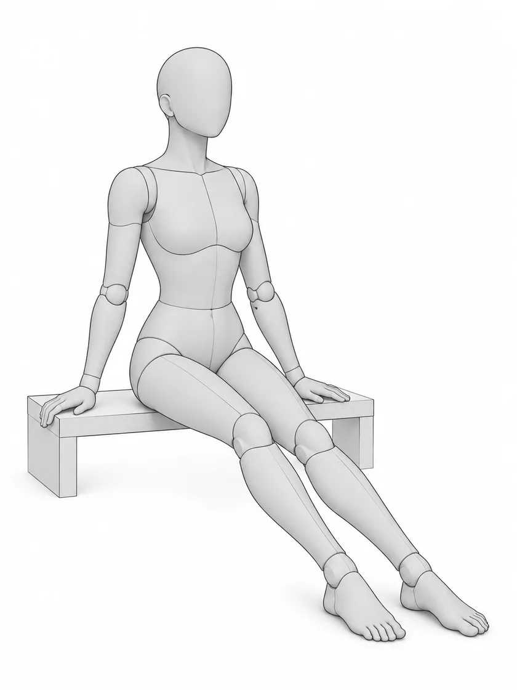
斜视Three-quarter必须分别看清两裤管、拖尾或下摆堆积遮住卖点；需同款前侧商品依据，线稿不能补足商品视角Avoid when both trouser legs must be separate or pooled fabric hides the selling point. Requires front-side references of the same garment; a pose drawing cannot supply missing product views.
查看原图 ↗View original ↗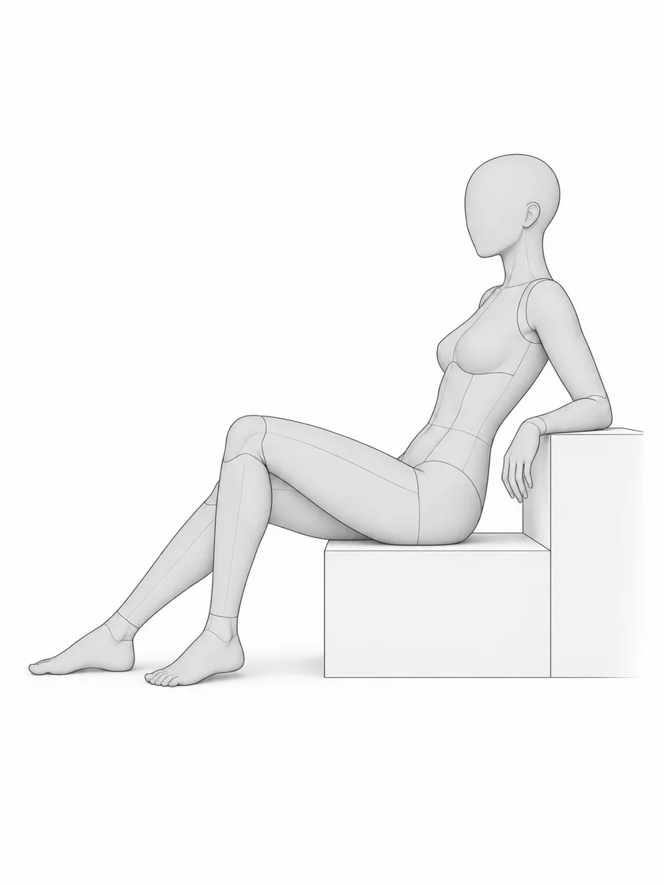
侧视Side深低领、短裙、需要证明未受拉伸衣长；肩肘支撑不清；需同款前侧商品依据，线稿不能补足商品视角Avoid low necklines, short skirts or unstrained-length evidence. Shoulder and elbow support must be credible. Requires front-side references of the same garment; a pose drawing cannot supply missing product views.
查看原图 ↗View original ↗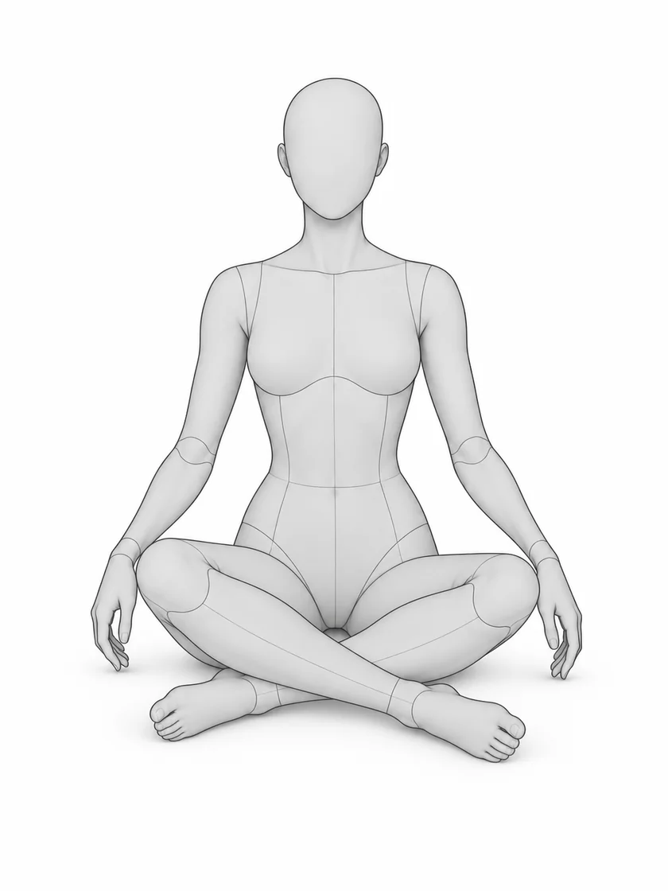
正视Front裙装、需要展示完整裤长、长外套后摆压在身下Avoid skirts, full trouser-length goals or a long coat hem trapped underneath.
查看原图 ↗View original ↗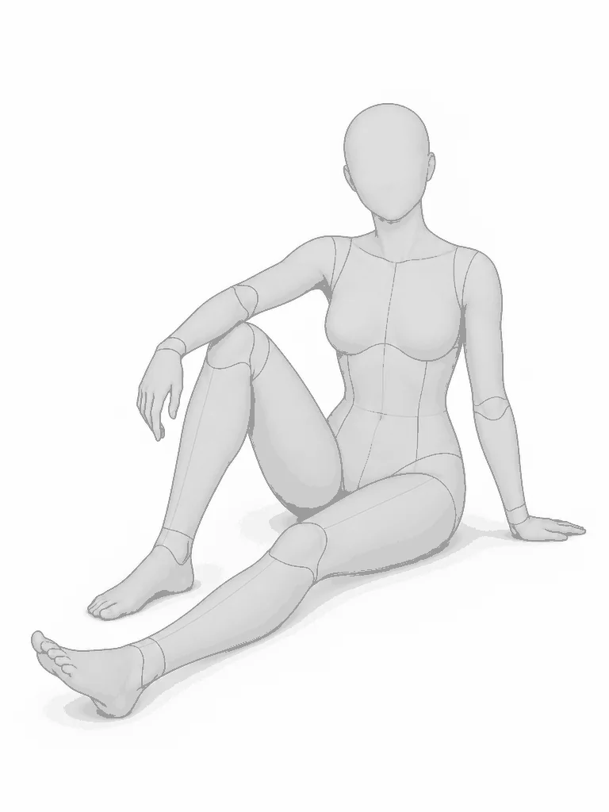
斜视Three-quarter腰腹图案为重点、短裙、膝盖过高挡住胸前；需同款前侧商品依据，线稿不能补足商品视角Avoid waist prints, short skirts or a raised knee obscuring the chest. Requires front-side references of the same garment; a pose drawing cannot supply missing product views.
查看原图 ↗View original ↗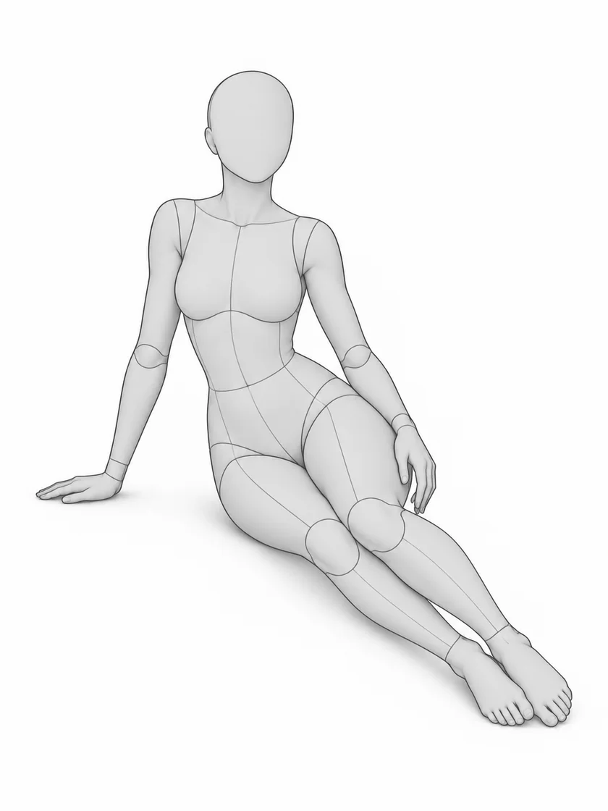
斜视Three-quarter要求完整对称前片、短裙、支撑手腕角度异常；需同款前侧商品依据，线稿不能补足商品视角Avoid a complete symmetrical front goal, short skirts or unnatural wrist support. Requires front-side references of the same garment; a pose drawing cannot supply missing product views.
查看原图 ↗View original ↗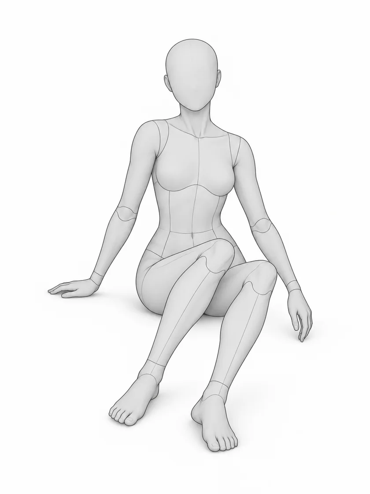
斜视Three-quarter衣料结构不可扭动、强转腰、后侧商品依据不足；需同款前侧商品依据，线稿不能补足商品视角Avoid rigid garments, excessive waist rotation or missing rear-side garment references. Requires front-side references of the same garment; a pose drawing cannot supply missing product views.
查看原图 ↗View original ↗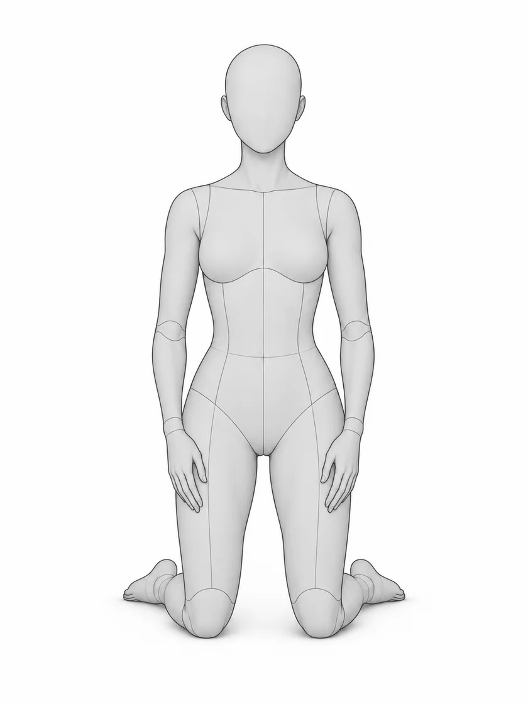
正视Front短裙、僵硬裙撑、长衣纹样被压在膝下Avoid short skirts, stiff skirt structures or key patterns compressed under the knees.
查看原图 ↗View original ↗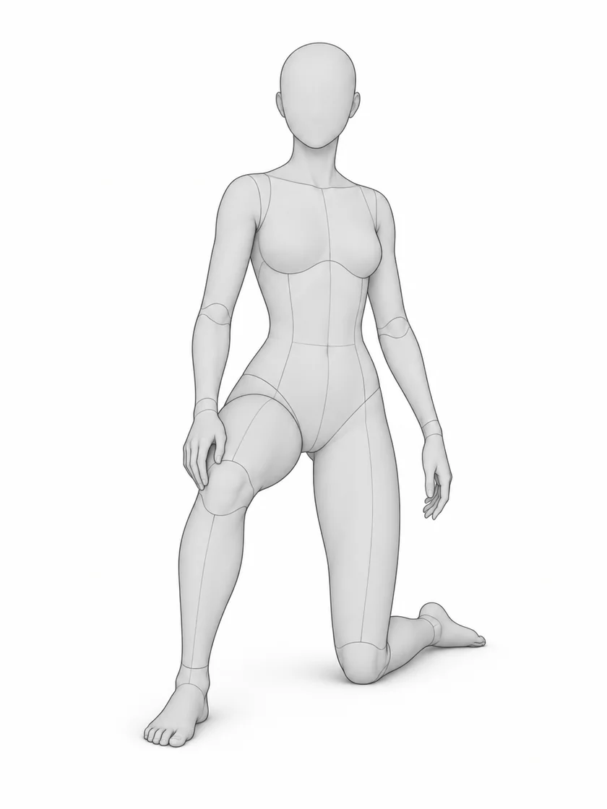
斜视Three-quarter窄裙、长拖尾、腿部活动量未知；不得当宗教动作默认使用；需同款前侧商品依据，线稿不能补足商品视角Avoid narrow skirts, long trains or unknown leg mobility. Do not default to religious framing. Requires front-side references of the same garment; a pose drawing cannot supply missing product views.
查看原图 ↗View original ↗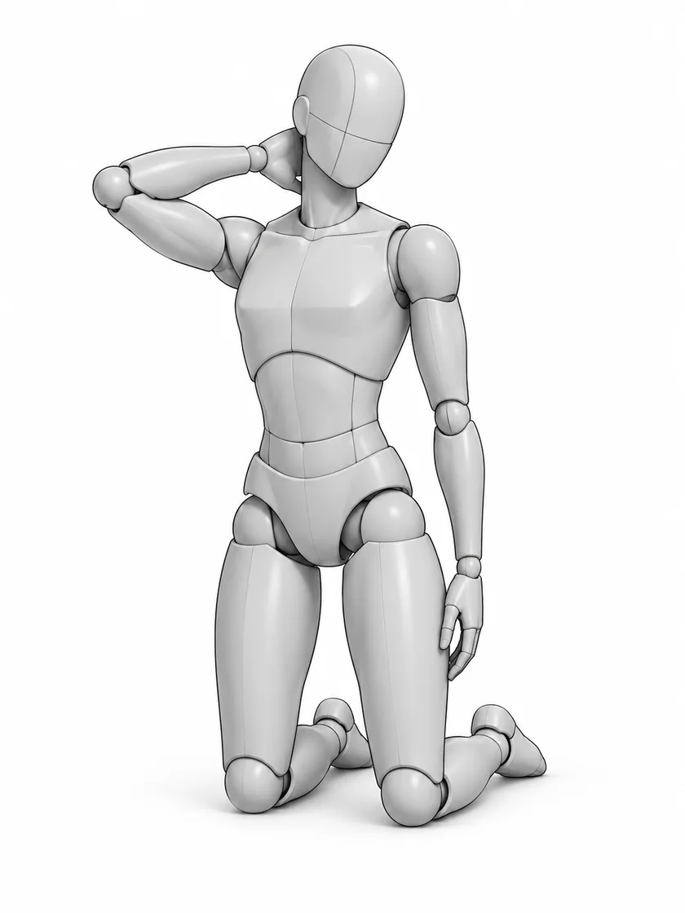
斜视Three-quarter紧袖、高领重点、过度后仰、短裙或易走光；需同款前侧商品依据，线稿不能补足商品视角Avoid tight sleeves, high-collar goals, excessive backbend, short skirts or exposure risk. Requires front-side references of the same garment; a pose drawing cannot supply missing product views.
查看原图 ↗View original ↗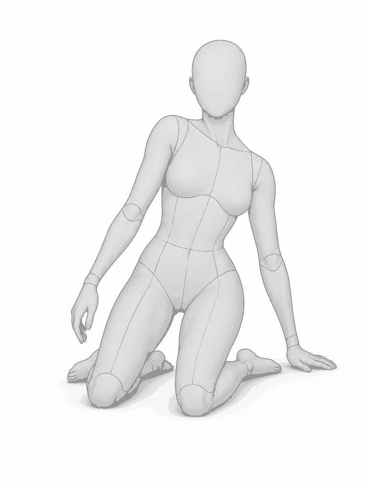
斜视Three-quarter正面结构验真、深低领、肩腕支撑不可信；需同款前侧商品依据，线稿不能补足商品视角Avoid front-construction verification, low necklines or implausible shoulder and wrist support. Requires front-side references of the same garment; a pose drawing cannot supply missing product views.
查看原图 ↗View original ↗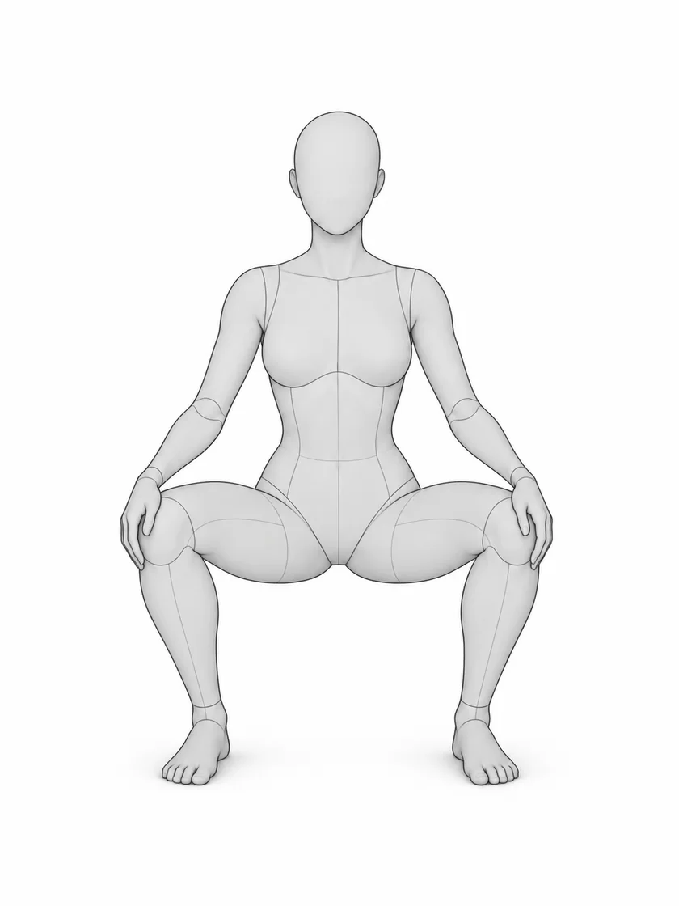
正视Front裙装、紧裤、必须展示原始衣长；脚跟悬空却宣称稳定Avoid skirts, tight trousers and original-length goals. Grounded heels are required.
查看原图 ↗View original ↗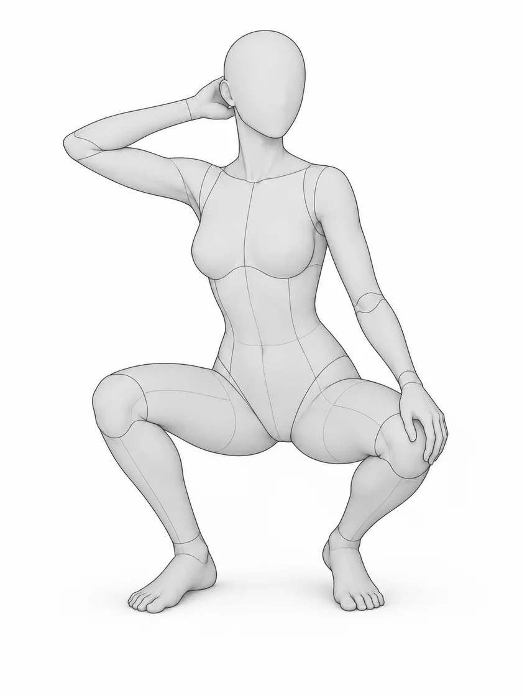
斜视Three-quarter紧袖、短裙、低领、头颈与举臂造成不可自然支撑；需同款前侧商品依据，线稿不能补足商品视角Avoid tight sleeves, short skirts, low necklines or unstable head and arm support. Requires front-side references of the same garment; a pose drawing cannot supply missing product views.
查看原图 ↗View original ↗背面未知却转出后片；裙摆活动量不足；需同款前侧商品依据，线稿不能补足商品视角Avoid revealing an unsupported back view or movement beyond the skirt’s allowance. Requires front-side references of the same garment; a pose drawing cannot supply missing product views.
查看原图 ↗View original ↗紧袖、袖形必须静态核验、结构变化与原商品冲突；需同款前侧商品依据，线稿不能补足商品视角Avoid tight sleeves, static sleeve-shape checks or movement inconsistent with the garment. Requires front-side references of the same garment; a pose drawing cannot supply missing product views.
查看原图 ↗View original ↗售卖要求原袖长不变、硬袖口、短袖、主图结构核验；需同款前侧商品依据，线稿不能补足商品视角；腰腹无遮挡或腰腹卖点展示时禁用；仅用户明确选用，不自动推荐或默认附图；明确附图时仍保留遮腹限制Restricted: the right forearm obscures the abdomen. Never use for clear waist or abdomen goals. User-selected only; attaching the drawing needs explicit choice. Avoid original-sleeve-length or construction checks, rigid cuffs and short sleeves. Requires front-side references of the same garment; a pose drawing cannot supply missing product views.
查看原图 ↗View original ↗商品细节严验、广角畸变压倒衣服、前伸手挡主要图案；需同款前侧商品依据，线稿不能补足商品视角Avoid detail-verification shots, dominant wide-angle distortion or a hand blocking the main print. Requires front-side references of the same garment; a pose drawing cannot supply missing product views.
查看原图 ↗View original ↗普通结构主图、短裙／低领、童装、床或性感化语境；需同款前侧商品依据，线稿不能补足商品视角Avoid standard construction shots, short skirts, low necklines, children, beds or sexualized framing. Requires front-side references of the same garment; a pose drawing cannot supply missing product views.
查看原图 ↗View original ↗要求完整正面、短裙／透明服饰、童装或暧昧语境；需同款前侧商品依据，线稿不能补足商品视角Avoid full-front goals, short or transparent garments, children or suggestive framing. Requires front-side references of the same garment; a pose drawing cannot supply missing product views.
查看原图 ↗View original ↗紧窄袖、固定肩带、易走光或必须保持衣长平直的商品；需同款前侧商品依据，线稿不能补足商品视角Avoid tight sleeves, fixed straps, exposure risk, or a need to keep garment length unstrained. Requires front-side references of the same garment; a pose drawing cannot supply missing product views.
查看原图 ↗View original ↗高领／帽领为必须完整展示部位；抬臂严重拉扯；需同款前侧商品依据，线稿不能补足商品视角Avoid high-collar or hood detail goals and sleeve strain. Requires front-side references of the same garment; a pose drawing cannot supply missing product views.
查看原图 ↗View original ↗低领易走光、硬挺前片必须完整平展；不得改成深鞠躬；需同款前侧商品依据，线稿不能补足商品视角Avoid low-neckline exposure and rigid front panels that must remain flat. No deep bow. Requires front-side references of the same garment; a pose drawing cannot supply missing product views.
查看原图 ↗View original ↗台高不合理、脚悬空、短裙、衣摆主结构被坐压；需同款前侧商品依据，线稿不能补足商品视角Requires believable seat height and grounded feet. Avoid short skirts or compressed key hems. Requires front-side references of the same garment; a pose drawing cannot supply missing product views.
查看原图 ↗View original ↗短裙、膝踝扭转不自然、硬挺礼服结构易塌；肩胯仍有轻转，需同款前侧商品依据Avoid short skirts, twisted joints, or stiff gowns that would collapse. Front-side garment evidence is required, including for this front view.
查看原图 ↗View original ↗窄裙、长拖尾、腿部活动量未知；不得当宗教动作默认使用；需同款前侧商品依据，线稿不能补足商品视角Avoid narrow skirts, long trains or unknown leg mobility. Do not default to religious framing. Requires front-side references of the same garment; a pose drawing cannot supply missing product views.
查看原图 ↗View original ↗这个组合没有视图，换一个类型或视角试试。No views in this combination. Try another family or view.
这些是既有 AI 姿势参考，面向成人女装 AI／不露脸拍摄规划；线稿不证明商品穿着效果或人物一致性。默认使用动作文字，附图需明确选择。These existing AI pose references support adult womenswear AI or faceless planning. They do not prove garment fit or identity fidelity. Text is the default; attaching a reference image is an explicit choice.
小幅推袖仍受限：右前臂遮腹，不用于腰腹无遮挡目标，也不进入自动推荐。其他动作仍需对照商品视角、衣物活动量与素材核验。The sleeve-push gesture remains restricted: the right forearm obscures the abdomen. It is excluded from automatic recommendations and clear-waist goals. Check garment views, mobility and source material for every other pose too.
60 图来源与复用记录 ↗Provenance for all 60 views ↗ · 在裁光中选姿 ↗Use the library in Caiguang ↗先识别服饰、推荐风格，再确认方案；生成后对照源图检查，按需授权修正。Identify the garment, explore styles and confirm a plan. Review generated images against the source, then approve any retries.
在36个视觉入口中选方向，结合用途调整光线、场景和构图。服饰细节与人物素材决定可以展示什么；风格调整同步进入本轮方案。Choose from 36 visual entries, then shape the lighting, setting and framing around your purpose. Garment and model references determine what the plan can show.
可只核对素材和准备方案，不生图。也可明确请求不露脸、平铺、挂拍或人台；各形式的实图验证范围不同。Stop after reference review and planning, with no images generated. Faceless, flat-lay, hanger and mannequin requests retain their documented limits.
52动作、60张参考视图，可按图号指定。结合领口、袖口、下摆等展示目标查看推荐理由；对照你指定的历史任务提示重复，必要复用时说明用途。Choose from 52 actions across 60 views. See recommendations for the details you need to show, and compare selected task records for repeats or intentional reuse.
图库面向成人女装AI／不露脸任务。默认使用动作文字，附图需明确选择；近似比较仅覆盖有限英文动作文字，不是看图识别。The visual library covers adult womenswear AI or faceless tasks. Text is the default; reference images are optional. Near-repeat checks use limited English action text, not image recognition.
看图选姿与限制 ↗Pose selection & limits ↗方向预览不是独立成片。首张人物确认、商品核对和生成授权分别处理；下方样片保留历史验收范围。A preview is not a set of final images. Model approval, garment review and generation permission stay separate. Examples below retain their historical scope.
接着，看既有成片里的衣服。Next, see the garments in published image examples.
STYLING CASES · 6 × 6
6 组 AI 六图案例。皮衣同款对照：外部试用与通勤窗光，服饰细节保留复核。Six six-image AI examples. Compare an external trial and Office Commute daylight from the same jacket input; garment-detail review remains separate.
BEFORE商品参考Product references
AFTERAI 场景穿搭AI scene styling
展示本次实际使用的两张主要服装参考；另有结构与人物参考。裤装照片中的灰色上衣不参与搭配。AI效果用于穿搭展示，细节与实物合身仍需核对。Two primary garment references actually used; additional construction and identity references were supplied. The gray top in the pants photo is not part of the generated outfit. AI styling previews still require detail and physical-fit review.
同一输入 · 外部试用与通勤窗光One input · external trial and Office Commute
AI 生成 · 六张独立图AI-generated · six separate images
AI 生成 · 六张独立图AI-generated · six separate images
AI 生成 · 六张独立图AI-generated · six separate images
AI 生成 · 六张独立图AI-generated · six separate images
01
同一件白马甲，六张独立成片。The same white vest, six individual portraits.
01侧身回转站姿Side-turn standing
02侧身倚靠墙面Side-leaning against a wall
03端正半身坐姿Upright half-body seated
04正面轻步迈步Front-facing gentle step
05微前倾俯身Slight forward lean
06背身回眸Back-turn glance
同一件服饰
六张独立图片One garment
Six individual images
AI 生成 · 已人工验收的历史案例。每张均可放大查看；不代表当前版本的全风格验证。AI-generated · a historical set accepted after human review. Open any image to inspect it; this is not an all-style validation of the current version. 案例记录与媒体条款 ↗Case record & media terms ↗
看见细节A CLOSER LOOK
对照源图检查颜色与结构；
补充搭配在生成前确认。Check color and construction against the source.
Confirm complementary styling before generation.
局部对照用于检查，不代表所有细节完全一致。These close-ups support review; they do not certify every detail.
02
以同一套服饰为参考，展示 24 种可选风格中的 3 种生成效果。The same outfit, shown in 3 of the 24 available styles.
既有公开 AI 样例，每种风格展示一张；主要呈现场景与光线变化，不是同套服饰的六图交付案例。Published AI examples, one per style, showing changes mainly in setting and light; not a complete six-image outfit set. 源图条款 ↗Source terms ↗ · 结果来源与权利 ↗Result provenance & rights ↗
03
从棚拍到街头，从日常到编辑大片。全部在这里。From studio to street, everyday to editorial. All here.
不同风格使用各自的参考素材。24 种风格供选择，每次选择一个主风格；并非一次生成 24 组。Styles use different source materials. Choose one main style from 24 options; one request does not generate 24 sets.
街头环境，自然随性的姿态。Street settings and an easy, unposed attitude.
运动搭配，轻松有活力。Sport-inspired styling with relaxed energy.
柔和光线，轻盈的身体线条。Soft light and graceful, fluid lines.
经典外套，沉稳的复古氛围。Classic outerwear with a heritage mood.
宽松廓形，城市日常感。Relaxed silhouettes in everyday city scenes.
简洁搭配，清楚呈现廓形。Simple styling that gives the silhouette space.
柔美色彩，细腻的装饰感。Soft colors and delicate decorative details.
干净背景，让服饰更清楚。A clean backdrop that brings the garment forward.
自然光线，松弛的生活场景。Natural light and an effortless everyday setting.
户外环境，突出机能层次。Outdoor settings and practical, layered styling.
街巷场景，鲜明的都市气氛。Street scenes with a distinctive urban mood.
温暖光影，丰富的场景质感。Warm light and richly textured settings.
日常空间，柔和自然光。Everyday spaces and soft natural light.
冷调光线，安静的杂志构图。Cool light and quiet editorial framing.
利落线条，简洁的城市穿搭。Clean lines and understated urban styling.
克制留白，现代东方意境。Considered space and a modern Chinese aesthetic.
明净空间，简约的轮廓关系。Airy spaces and pared-back silhouettes.
通勤场景，清晰的搭配层次。Workday settings with considered outfit layers.
经典搭配，温润的室内光影。Classic styling in warm, atmospheric interiors.
学院元素，整洁有层次。Collegiate references and neatly layered looks.
低调色彩，重视光影与材质。Understated colors with attention to light and texture.
开阔场景，轻松的度假气息。Open settings and an easy holiday mood.
工装层次，质朴的复古表达。Utility layers and a grounded vintage mood.
鲜明搭配，带有千禧年代气息。Expressive styling with a turn-of-the-millennium mood.
样例不等于当前版本全风格验证，也不代表图片可自由复用。Examples do not verify every style in the current version or grant unrestricted media reuse.
美式街头、英伦传承、都市宽松男装、韩式男装、美式学院和复古工装使用 Eyüpcan Timur 的摄影作品作人物参考；其余 18 组使用既有公开 AI 女性案例。服饰参考包括署名 Pexels 摄影与项目已授权的米色套装。它们是已公开的历史、补测和替换输入结果，不是 beta.8 新生成结果。American Street, British Heritage, Cityboy, Korean Menswear, Preppy and Workwear Vintage use an Eyüpcan Timur photograph as an identity reference; the other 18 use the existing public AI female case. Garment references include credited Pexels photographs and the project-authorized beige outfit. These are published historical, supplementary and replaced-input results, not new beta.8 outputs.
人物摄影参考：Eyüpcan Timur ↗Identity photograph: Eyüpcan Timur ↗ · AI 人物案例 ↗AI identity case ↗ · 逐组来源与权利 ↗Per-case provenance & rights ↗
04
先识别服饰与选择方向，再决定是否生图。Identify the garment and choose a direction before generating.
尚未安装NEW TO CAIGUANG
插件安装在 Codex 中。按指南完成下载、校验、注册与启用，再开始第一次识别。Install the plugin in Codex. Follow the guide to download, verify, register and enable it, then run your first recognition.
查看安装指南 ↗Open installation guide ↗ 下载裁光插件 ↗Download Caiguang plugin ↗beta.17 在 Codex 中显示为裁光 · Caiguang，调用名仍为 $threadtruth-studio；新环境实测待完成。In Codex, beta.17 is listed as 裁光 · Caiguang and invoked with $threadtruth-studio. Fresh-host testing remains pending.
当前验证环境：维护者 macOS，Python 3，以及支持插件安装的 Codex CLI。新机器与其他系统尚未验证。Verified on the maintainer’s Mac with Python 3 and a Codex CLI supporting plugin installation. Fresh machines and other systems remain unverified.
已经安装ALREADY INSTALLED
在新的 Codex 任务中上传清晰、有权使用的服饰照片，再复制下方指令。Upload a clear, authorized garment photo in a new Codex task, then copy the prompt below.
一张清晰正面照即可开始识别；
其他角度按需要补充。Start recognition with one clear front view.
Add other views as needed.
请用 $threadtruth-studio 核对服饰和人物素材，给出风格、光线、构图与逐张动作的拍摄方案。先不生图。
Use $threadtruth-studio to review my garment and model references, then propose the style, lighting, framing and poses for each shot. Do not generate images yet.
也可选中指令手动复制。这一步不生成图片。You can also select and copy the prompt manually. This step does not generate images.
单件上装需要补全的裤装、鞋包会在方案中确认，不当作源图事实。完整套装应清楚展示各单品及搭配关系。For a single top, complementary bottoms, shoes and accessories are confirmed in the plan, not treated as source facts. An outfit photo should clearly show each item and its layering.
ChatGPT 网页是从 Codex 发起的可选转交路线；插件不会安装到 ChatGPT。生成与重试需要明确授权，失败不自动继续。ChatGPT web is an optional handoff route from Codex; the plugin is not installed in ChatGPT. Generation and retries require explicit approval; failures do not automatically continue.